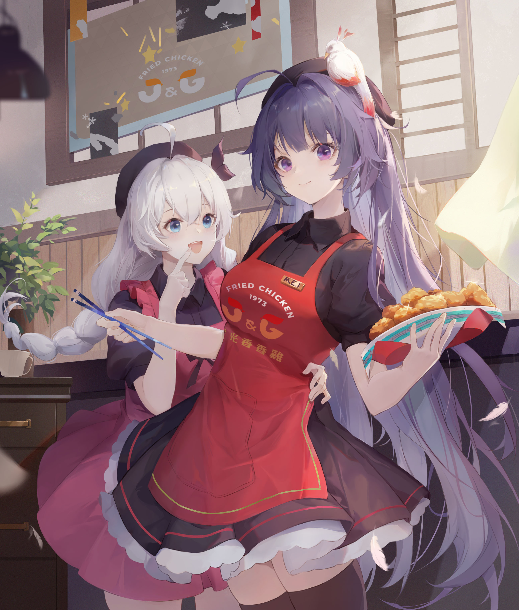

雷电女王的觉醒——雷电芽衣
紫色长发，眸色浅紫，长发以蝴蝶结扎起，束成马尾。千羽学园时穿着学园制服，紫色斑点蝴蝶结，黑色水手服和长筒袜 。圣芙蕾雅学园时穿着学园制服或天命极东支部的女武神制服，身穿学院制服时，内为黑色长裙，刘海上别着两个发夹 。女武神制服则是十分少女的连衣裙外形，让旁人第一眼并不会联想到战斗。这也使芽衣比其他人都多了一份亲近感 。双手的袖套是使用特殊的纤维材料制作的，有着外表看不出来的坚韧性，甚至能抵挡尖锐物的攻击。对于使用太刀的芽衣来说，可以说是非常实用的护具 。
日常将一束发扎成小麻花辫置于前胸，尾端绑着红色蝴蝶结，白绒球耳坠，穿着米色高领毛衣，黑色短裙，外披浅色长外套 。战斗中穿着脉冲装·绯红，束发换为红色机械，身穿黑色布料和红色装甲组成的装甲，尾翼裙甲上有“雷”的行书 。
游戏中形象为鬼铠，破碎的甲胄映射出不详的紫光，衣物的边缘也被高热完全烧毁，仿佛在向整个世界宣告着，雷电女王的诞生 。
“雷光斩断过去，你我踏上歧路。我将坠入黑暗，换你回到光明。” |
